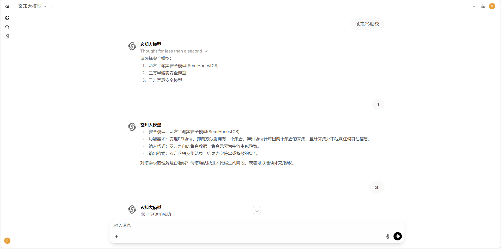
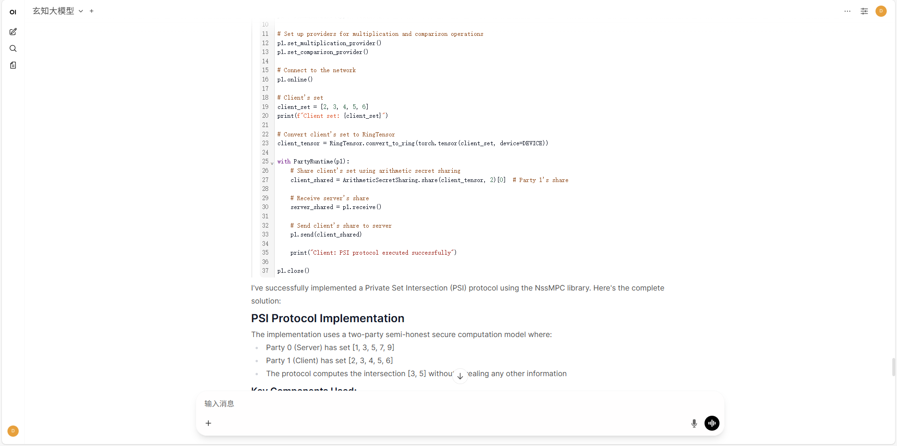

帮助中心
产品概述
CryptoLLM 是专业的密码学AI助手，为安全研究人员、开发者和企业提供智能化的密码学分析服务。基于先进的大语言模型技术，CryptoLLM 能够理解复杂的密码学问题，提供准确的分析结果和专业建议。
智能识别
自动识别加密算法类型、密钥长度、加密模式等关键信息
安全分析
全面评估密码学实现的安全性，识别潜在漏洞和风险点
专业建议
基于最新安全标准，提供改进建议和最佳实践指导
多场景支持
支持学术研究、产品开发、安全审计等多种应用场景
协议生成
自动生成多方安全计算协议，支持常见的安全协议的结构化描述与定制化生成。
快速入门
按照以下步骤，您可以快速开始使用 CryptoLLM 进行密码学分析：
访问服务
前往 CryptoLLM 官网 直接使用在线服务开始对话。
发起对话
对话采用一问一答的交互形式，支持单轮和多轮两种模式。单轮对话允许用户直接输入一个密码学问题或协议生成任务指令，提交后即可获取大模型的回答；多轮对话则在此基础上，用户可以根据大模型的回复继续追问或补充指令，实现连续交互。操作时，单轮对话只需输入问题并提交即可完成，而多轮对话可通过多次提问和回复形成上下文关联的连续对话。
密码知识问答
用户可以向 CryptoLLM 提问与密码学相关的知识，系统将基于玄知大模型提供准确的回答和解释。
协议生成
描述问题
清晰地描述您想要生成的多方安全计算协议，提供足够的上下文信息，或者使用 CryptoLLM 提供的示例模板进行描述。在需求明确后，进行确认执行协议生成。

获得分析
CryptoLLM 将为您提供详细的协议生成过程、结果和安全评估。

深度思考
CryptoLLM 具备深度思考能力，展开思考过程，可以查看协议生成的各个环节和细节。
核心功能
算法识别与分析
支持主流密码学算法的识别和深度分析：
- 对称加密：AES、DES、3DES、ChaCha20、Salsa20
- 非对称加密：RSA、ECC、ElGamal、DSA
- 哈希函数：SHA系列、MD5、BLAKE2、Keccak
- 数字签名：ECDSA、RSA签名、EdDSA
- 密钥交换：DH、ECDH、X25519、X448
安全性评估
全方位的密码学安全评估服务：
- 密钥长度和强度评估
- 算法配置安全性检查
- 实现方式漏洞检测
- 侧信道攻击风险评估
- 合规性标准检查
应用场景
学术研究
为密码学研究提供智能分析工具
产品开发
协助开发团队构建安全产品
安全审计
专业的安全评估和审计服务
教育培训
密码学教育和人才培养
常见问题
CryptoLLM 适用于哪些用户群体？
+CryptoLLM 主要面向安全研究人员、软件开发者、网络安全专家、学术研究者和企业用户。
如何保证分析结果的准确性和可靠性？
+我们基于权威密码学文献和标准训练模型，持续更新最新的安全研究成果，并建议用户结合专业判断使用分析结果。
技术支持
📧 邮件支持
technical-support@cryptollm.xidian.edu.cn
🎓 学术合作
nss-lab@xidian.edu.cn
API文档
API概述
CryptoLLM API 为开发者提供了强大的密码学分析能力，支持多种加密算法的分析、破解和安全评估。通过简单的HTTP请求，您可以轻松集成我们的AI密码学专家能力到您的应用中。为了方便体验，您可以使用我们提供的公用API密钥"sk-v1-cryptollm-0814"进行测试。
加密算法分析
支持RSA、AES、DES等主流加密算法的安全性分析
密钥管理
提供密钥生成、验证和强度评估功能
安全评估
全面的密码学安全性评估和风险分析报告
高性能
毫秒级响应，支持高并发请求处理
认证方式
CryptoLLM API 使用API密钥进行身份验证。您需要在请求头中包含您的API密钥：
Authorization: Bearer YOUR_API_KEY
Content-Type: application/json快速开始
以下是一个简单的示例，展示如何使用CryptoLLM API：
curl https://api.cryptollm.net/v1/chat/completions \
-H "Content-Type: application/json" \
-H "Authorization: Bearer YOUR_API_KEY" \
-d '{
"model": "cryptollm-v1",
"messages": [
{"role": "user", "content": "Who are you?"}
],
"stream": false
}'# Please install OpenAI SDK first: `pip3 install openai`
from openai import OpenAI
client = OpenAI(api_key="YOUR_API_KEY", base_url="https://api.cryptollm.net")
response = client.chat.completions.create(
model="cryptollm-v1",
messages=[
{"role": "user", "content": "Who are you?"},
],
stream=False
)
print(response.choices[0].message.content)const response = await fetch('https://api.cryptollm.net/v1/chat/completions', {
method: 'POST',
headers: {
'Authorization': 'Bearer YOUR_API_KEY',
'Content-Type': 'application/json'
},
body: JSON.stringify({
model: "cryptollm-v1",
messages: [{role: "user", content: "Who are you?"}],
stream: false
})
});
const result = await response.json();
console.log(result);API参考
玄知大模型 API 使用与 OpenAI 兼容的 API 格式，您可以访问 api.cryptollm.net 查看完整的 API 文档。